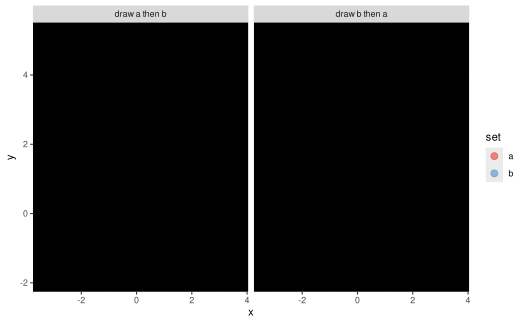

Arguments
- object
One of:
A layer-like object: applies this operation to the layer.
A missing argument: creates an operation
Anything else: creates an operation, passing
objectalong to thepartitionargument
- partition
One of:
A list of quosures, such as returned by
vars(), giving a (possibly multi-) column expression for thepartitionaesthetic. These expressions are combined usinginteraction()to be passed on toaes(partition = ...)A one-sided formula, giving a single-column expression for the
partitionaesthetic, which is passed on toaes_(partition = ...).
Value
A layer-like object (if object is layer-like) or an operation (if not).
Details
This is a shortcut for setting the partition aesthetic of a layer.
partition(~ XXX)is roughly equivalent toadjust(aes(partition = XXX))partition(vars(X, Y, ...))is roughly equivalent toadjust(aes(partition = interaction(X, Y, ...)))
When a layer with a partition aesthetic is used by the following
operations, the effects of the operations are applied across groups:
blend(): Blends graphical objects within the subgroups defined by the partition together using normal ("over") blending before applying its blend between subgroups.
Examples
library(ggplot2)
# create two versions of a dataset, where draw order can affect output
set.seed(1234)
df_a = data.frame(x = rnorm(500, 0), y = rnorm(500, 1), set = "a")
df_b = data.frame(x = rnorm(500, 1), y = rnorm(500, 2), set = "b")
df_ab = rbind(df_a, df_b) |>
transform(order = "draw a then b")
df_ba = rbind(df_b, df_a) |>
transform(order = "draw b then a")
df = rbind(df_ab, df_ba)
# Using the "multiply" blend mode, draw order does not matter, but
# the "multiply" blend is applied to all points, creating dark regions
# outside the intersection:
df |>
ggplot(aes(x, y, color = set)) +
geom_point(size = 3, alpha = 0.5) |> blend("multiply") +
scale_color_brewer(palette = "Set1") +
facet_grid(~ order)
# By partitioning (either through |> partition(vars(set)) or aes(partition = set))
# we will blend using the default blend mode (over) first, then we can apply the
# "multiply" blend just between the two sets, so the regions outside the
# intersection are not blended using "multiply":
df |>
ggplot(aes(x, y, color = set, partition = set)) +
geom_point(size = 3, alpha = 0.5) |> blend("multiply") +
scale_color_brewer(palette = "Set1") +
facet_grid(~ order)
